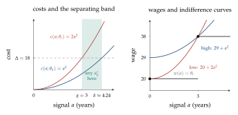

5.4. Separating equilibria#
Define two thresholds:
Both exist and are unique by Assumption 5.1. \(\underline a\) is the signal that costs the low type exactly the wage gain from being thought high; \(\bar a\) is the signal that costs the high type exactly that much. By single crossing \(c(\underline a;\theta_h)<c(\underline a;\theta_l)=\Delta\), so \(\underline a<\bar a\).
Theorem 5.1 (Separating equilibria; Spence 1973)
(a) In every separating PBE, the low type chooses \(a_l^*=0\) and is paid \(\theta_l\); the high type chooses some \(a_h^*\in[\underline a,\bar a]\) and is paid \(\theta_h\).
(b) Conversely, for every \(a_h^*\in[\underline a,\bar a]\) there is a separating PBE in which the high type chooses \(a_h^*\). One set of supporting beliefs is
\[\begin{split} \mu^*(a)=\begin{cases}0&\text{if }a<a_h^*,\\1&\text{if }a\ge a_h^*,\end{cases} \qquad w^*(a)=\begin{cases}\theta_l&\text{if }a<a_h^*,\\\theta_h&\text{if }a\ge a_h^*.\end{cases} \end{split}\]
The least-cost separating equilibrium has \(a_h^*=\underline a\), the signal at which the low type is just indifferent between mimicking and not.
Proof strategy (Theorem 5.1)
For (a), work backwards. Bayes’ rule (T1) and Lemma 5.1 pin down the wages at the two equilibrium signals. Then the low type must be choosing \(0\), since any off-path wage is at least \(\theta_l\). That leaves two no-mimicking constraints (T3): the low type must not want \(a_h^*\), and the high type must not want \(0\). The first gives \(a_h^*\ge\underline a\), the second \(a_h^*\le\bar a\). For (b), choose off-path beliefs that are as pessimistic as possible below \(a_h^*\), and check that no type wants to deviate. Single crossing (T4) is what makes the interval non-empty.
Proof of Theorem 5.1
Step 1: wages at the equilibrium signals (T1). In a separating equilibrium the high type chooses \(a_h^*\) and the low type \(a_l^*\ne a_h^*\). After \(a_h^*\), Bayes’ rule gives
and likewise \(\mu^*(a_l^*)=0\). By Lemma 5.1, \(w^*(a_h^*)=\theta_h\) and \(w^*(a_l^*)=\theta_l\).
Step 2: the low type chooses zero. Whatever firms believe after \(a=0\), Lemma 5.1 gives a wage \(\hat\theta\ge\theta_l\). So the low type can get at least \(\theta_l-0\) by choosing \(0\). Choosing \(a_l^*>0\) gives \(\theta_l-c(a_l^*;\theta_l)<\theta_l\). Hence \(a_l^*=0\).
Why this step?
This is why the low type never wastes money on a signal that does not fool anyone: the worst she can be thought is low, and she can be thought that for free.
Step 3: the low type must not mimic (T3). The low type must prefer \(0\) to \(a_h^*\):
Step 4: the high type must not drop out (T3). By Step 2’s reasoning, the high type can get at least \(\theta_l\) by choosing \(0\). So
This proves (a).
Why this step?
The lecture slides check the high type’s constraint only against the equilibrium wage at \(0\), which is \(\theta_l\). That is the right comparison: what the high type can secure by deviating is at least \(\theta_l\), and in the equilibrium we construct it is exactly \(\theta_l\).
Step 5: construction (b). Take \(a_h^*\in[\underline a,\bar a]\) and the displayed beliefs and wages. Beliefs are consistent with Bayes’ rule at \(0\) and \(a_h^*\) (Step 1), and arbitrary elsewhere, as allowed. Wages follow Lemma 5.1. Now check each type’s choice of signal.
Any \(a\in(0,a_h^*)\) earns \(\theta_l\), like \(a=0\), at higher cost. Any \(a>a_h^*\) earns \(\theta_h\), like \(a_h^*\), at higher cost. So each type chooses either \(0\) or \(a_h^*\).
The low type prefers \(0\) because \(a_h^*\ge\underline a\) (Step 3).
The high type prefers \(a_h^*\) because \(a_h^*\le\bar a\) (Step 4).
Step 6: the interval is not empty (T4). By single crossing \(c(\underline a;\theta_h)<c(\underline a;\theta_l)=\Delta=c(\bar a;\theta_h)\), and \(c(\cdot\,;\theta_h)\) is increasing, so \(\underline a<\bar a\).
Why this step?
Without single crossing, the signal that deters the low type could be too expensive for the high type too, and no separating equilibrium need exist (Exercise Exercise 5.6).


Fig. 5.1 The least-cost separating equilibrium in Example 5.1. Left: a signal \(a_h^*\) separates if it costs the low type at least \(\Delta\) and the high type at most \(\Delta\); single crossing makes the band \([3,4.24]\) non-empty. Right: the wage schedule (grey) jumps from \(20\) to \(38\) at \(a=3\). The low type’s indifference curve through her equilibrium point \((0,20)\) passes exactly through \((3,38)\): she is indifferent to mimicking. The high type’s indifference curve through \((3,38)\) lies above the wage schedule everywhere else, so she has no better choice.#
5.4.1. Interpreting separating equilibria#
The signal’s level is set by the low type. In the least-cost equilibrium \(c(a_h^*;\theta_l)=\Delta\): the high type studies exactly long enough that the low type would not. What the high type’s own costs are hardly matters, as long as she is willing to pay. In Example 5.1, three years cost the low type \(18\), exactly the wage gain.
The wage is a step. Firms pay \(\theta_l\) below the threshold and \(\theta_h\) at or above it. Nobody studies for two years (it earns what zero years earn) or for four (it earns what three earn).
Education is paid although it adds nothing. A high type with a degree earns \(\theta_h\); if a low type somehow had the same degree, firms would pay her \(\theta_h\) too. The premium is a premium for the information in the certificate.
Many equilibria. Any \(a_h^*\in[3,4.24]\) separates. They differ only in how much the high type wastes. What selects among them? Firms’ beliefs about signals between \(3\) and \(a_h^*\): if they thought a worker with \(3.5\) years was high, the high type would stop at \(3.5\). Generalisations shows that a natural restriction on such beliefs selects the least-cost equilibrium.
Why single crossing is essential. If the signal cost both types the same, any signal the high type was willing to buy would be worth buying for the low type too. Information is conveyed by an action only through differences in its cost.